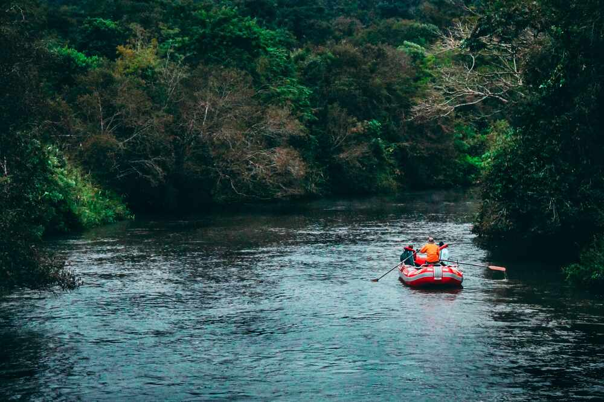

Rafting Iniciante — Rio Manso
Ideal para quem nunca remou. Corredeiras de nível 1 e 2, com ritmo tranquilo e muitas paradas para fotos e banho de rio. O guia explica tudo antes de entrar na água, então não precisa de experiência.
Duração: 2 horas | Nível: Fácil | A partir de: R$ 150